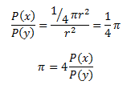
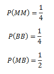
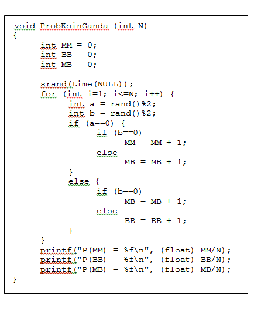
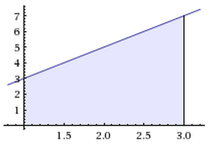

Algoritma Monte Carlo adalah algoritma komputasi yang dapat mensimulasikan berbagai perilaku dalam fisika dan matematika. Algoritma ini biasanya digunakan untuk menghitung integral definite (integral tentu) yang rumit dan tidak dapat diselesaikan dengan rumus-rumus kalkulus integral biasa. Perhitungan menggunakan algoritma Monte Carlo cukup kompleks serta memerlukan banyak pengulangan dan variabel, sehingga algoritma ini hanya digunakan untuk komputer.
Kata Monte Carlo sendiri sebenarnya berasal dari nama sebuah kasino di Monako. Nama ini diambil karena algoritma Monte Carlo melibatkan sampling statistik yang biasa terjadi pada perjudian di kasino.
Penggunaan algoritma Monte Carlo yang cukup terkenal diantaranya adalah perhitungan sifat-sifat neutron dalam atom oleh Enrico Fermi, pengembangan bom atom oleh Amerika Serikat dalam Manhattan Project, dan pengembangan bom hidrogen di laboratorium Los Alamos.
Saat ini, algoritma Monte Carlo banyak diterapan dalam grafis, video games, arsitektur, animasi film, dan lain-lain.
Untuk dapat lebih memahami cara kerja algoritma Monte Carlo, perhatikanlah beberapa contoh penerapan algoritma tersebut berikut ini.
Misalkan kita memiliki sebuah seperempat lingkaran dalam persegi sebagaimana gambar berikut ini.
Untuk menghitung nilai `pi`, kita taburkan sejumlah beras di atas persegi tersebut. Misalkan pula kita memiliki dua buah variabel random, x dan y. Variabel x menyatakan kejadian beras jatuh di area berwarna biru, sementara variabel y menyatakan kejadian beras jatuh di atas persegi. Maka, perbandingan peluang kedua kejadian tersebut adalah
Nilai P(x) dapat dihitung dengan menghitung berapa jumlah beras yang jatuh di area biru, sementara nilai P(y) dapat dihitung dengan menghitung berapa jumlah beras yang dijatuhkan ke atas persegi. Dengan mendapatkan kedua nilai tersebut, kita sudah dapat menghitung nilai `pi`, tapi hasilnya tidak akan akurat. Untuk mendapatkan hasil yang seakurat mungkin, jumlah beras yang digunakan harus sangat banyak hingga tidak dapat dihitung manual oleh manusia. Oleh karena itu, diperlukan komputer yang dapat meng-generate sejumlah banyak beras beserta posisi masing-masing beras yang dijatuhkan.
Misalkan kita memiliki dua buah koin, masing-masing koin memiliki dua sisi, yaitu muka dan belakang. Jika kita melempar kedua koin tersebut, maka ada tiga kemungkinan yang dapat terjadi:
Dari teori probabilitas, peluang ketiga kejadian tersebut adalah
Nilai peluang ini dapat dibuktikan dengan benar-benar melempar kedua koin tersebut, mencatat setiap hasil pelemparan, lalu mengakumulasi seluruh percobaan. Namun, jumlah pelemparan yang dilakukan harus sangat banyak agar nilai peluang yang diperoleh seakurat mungkin. Caranya adalah dengan membuat sebuah program yang dapat meng-generate hasil pelemparan secara acak.
Berikut adalah contoh fungsi untuk menghitung probabilitas pelemparan koin ganda dengan bahasa C. Kejadian muka (M) dilambangkan dengan nilai 0, sementara kejadian belakang (B) dilambangkan dengan nilai 1.
Berikut adalah hasil run program dengan nilai N yang berbeda-beda. Perhatikan bahwa semakin besar nilai N, nilai peluang yang dihasilkan semakin mendekati nilai peluang dari teori probabilitas.
Sebagaimana telah disebutkan di awal, algoritma monte carlo umumnya digunakan untuk menghitung nilai integral tentu yang rumit. Berikut adalah contoh perhitungan tersebut dengan menggunakan algoritma Monte Carlo. Namun, untuk mempermudah persoalan, persamaan integral yang akan dihitung masih tergolong mudah dan sebenarnya bisa diselesaikan dengan rumus kalkulus integral biasa.
Misalkan kita akan menghitung nilai dari `int_1^3 (2x+1) dx`, atau sama saja dengan mencari luas area biru pada gambar di bawah ini.
Luas area tersebut dapat dicari dengan melakukan pelemparan kelereng di atas segi empat pada bidang kartesius di atas (koordinat x=1 sampai x=3 dan koordinat y=0 sampai y=7). Jika kita melempar kelereng sebanyak N kali, dan M buah pelemparan di antaranya jatuh di area biru, maka
`(Luas \ area \ biru) / (Luas \ segi \ empat) = M/N`
`(Luas \ area \ biru) / 14 = M/N`
Seperti contoh-contoh penerapan algoritma Monte Carlo sebelumnya, nilai N atau jumlah pelemparan kelereng pada kasus ini juga harus sangat besar untuk mendapatkan hasil yang akurat. Untuk itu, diperlukan program yang dapat meng-generate N buah koordinat kelereng. Jika koordinat tersebut terletak di area biru, maka nilai M bertambah satu.